Introduction to Model Sculpting
modsculpt.RmdIntroduction
The goal of this vignette is to make you familiar with model sculpting. We do this by using a publicly available “bike sharing” dataset.
Data preparation
Download the dataset at http://archive.ics.uci.edu/ml/datasets/Bike+Sharing+Dataset,
unzip, and load day.csv. You can use the following code to
do all the steps above:
download.file(
"http://archive.ics.uci.edu/ml/machine-learning-databases/00275/Bike-Sharing-Dataset.zip",
destfile = "bike_rentals.zip"
)
unzip("bike_rentals.zip")
df <- read.csv("day.csv")Firstly, check the dimensionality:
dim(df)
#> [1] 731 16Have a look at the dataset
head(df)
#> instant dteday season yr mnth holiday weekday workingday weathersit
#> 1 1 2011-01-01 1 0 1 0 6 0 2
#> 2 2 2011-01-02 1 0 1 0 0 0 2
#> 3 3 2011-01-03 1 0 1 0 1 1 1
#> 4 4 2011-01-04 1 0 1 0 2 1 1
#> 5 5 2011-01-05 1 0 1 0 3 1 1
#> 6 6 2011-01-06 1 0 1 0 4 1 1
#> temp atemp hum windspeed casual registered cnt
#> 1 0.344167 0.363625 0.805833 0.1604460 331 654 985
#> 2 0.363478 0.353739 0.696087 0.2485390 131 670 801
#> 3 0.196364 0.189405 0.437273 0.2483090 120 1229 1349
#> 4 0.200000 0.212122 0.590435 0.1602960 108 1454 1562
#> 5 0.226957 0.229270 0.436957 0.1869000 82 1518 1600
#> 6 0.204348 0.233209 0.518261 0.0895652 88 1518 1606In this dataset, instant is the primary key,
cnt is the response that we want to predict, columns
season:windspeed are the features we can use for
prediction.
response <- "cnt"
covariates <- c("season", "yr", "mnth", "holiday", "weekday", "workingday", "weathersit", "temp", "atemp", "hum", "windspeed")Let’s get rid of instant, dteday,
casual and registered:
df$instant <- NULL
df$dteday <- NULL
df$casual <- NULL
df$registered <- NULLLastly, we need to properly encode discrete variables into factors:
idx_factor <- vapply(df, function(x) length(unique(x)) <= 12, logical(1))
df[idx_factor] <- lapply(df[idx_factor], as.factor)We treat the following variables as factors:
print(names(idx_factor)[idx_factor])
#> [1] "season" "yr" "mnth" "holiday" "weekday"
#> [6] "workingday" "weathersit"The goal of this document is to show how model sculpting can be used. Therefore, we will not explore the bike rentals dataset further but rather go ahead with the model sculpting.
Model Sculpting
Build a base model
Before we can move to model sculpting, we need an actual model that we can sculpt. Let’s build an xgboost model. Yet before we start, it is good to check the following:
- Investigate the NAs. Check if there are any NAs with the following code:
anyNA(df)
#> [1] FALSEFor model sculpting, you should remove or impute NAs if you have any.
- Remove constant (or zero-variance) columns. Check if there are any with the following code:
# for continuous features
lapply(df[!idx_factor], function(x) var(x) < 1e-10)
#> $temp
#> [1] FALSE
#>
#> $atemp
#> [1] FALSE
#>
#> $hum
#> [1] FALSE
#>
#> $windspeed
#> [1] FALSE
#>
#> $cnt
#> [1] FALSE
# for discrete features
lapply(df[idx_factor], function(x) length(unique(x)) == 1)
#> $season
#> [1] FALSE
#>
#> $yr
#> [1] FALSE
#>
#> $mnth
#> [1] FALSE
#>
#> $holiday
#> [1] FALSE
#>
#> $weekday
#> [1] FALSE
#>
#> $workingday
#> [1] FALSE
#>
#> $weathersit
#> [1] FALSEFor model sculpting, you should remove zero-variance columns if you have any.
Build a strong learner
In this vignette, we will split the available data to train / holdout sets with ratio 70 / 30.
set.seed(9876)
idx_holdout <- sample(nrow(df), size = ceiling(0.3 * nrow(df)))
df_h <- df[idx_holdout, ]
df_t <- df[-idx_holdout, ]Let’s quickly (i.e. the hyperparameters are already predefined) build an xgboost model for our bike rentals dataset:
requireNamespace("xgboost")
#> Loading required namespace: xgboost
set.seed(567)
est <- xgboost::xgb.train(
params = list(
booster = "gbtree",
objective = "reg:squarederror",
eta = 0.05,
gamma = 3,
max_depth = 3,
min_child_weight = 5,
colsample_bytree = 1,
subsample = 0.7
),
nrounds = 100,
data = xgboost::xgb.DMatrix(
data = model.matrix(~ . - 1, data = df_t[covariates]),
label = df_t[[response]]
),
verbose = 0,
nthread = 2
)Here you can see the variable importances based on xgboost:
xgboost::xgb.plot.importance(xgboost::xgb.importance(model = est))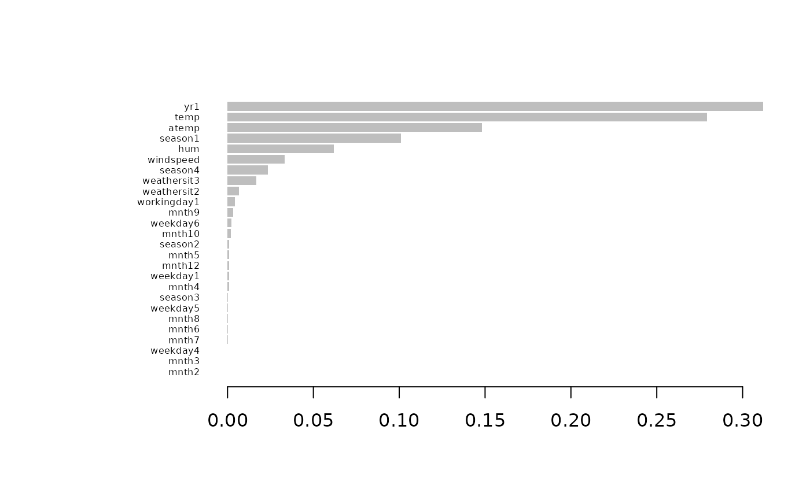
Build a rough model
Let’s sculpt this xgboost model.
Firstly, we need to define a prediction function that takes data as input and returns predictions based on the trained model (in this case, the xgboost above):
xgb_pred <- function(x) {
predict(est, newdata = model.matrix(~ . - 1, data = x))
}Secondly, we need to generate product marginals, a grid of values that is sampled independently per each column from the original dataset. For more detailed information on why we do this, please check out the function documentation.
pm <- sample_marginals(
dat = df_t[covariates], # generate product marginals based on original training data
n = 10000, # size of the grid
seed = 372 # for exact reproducibility
)Check the dimensionality of the grid: number of rows is 10000 as requested, number of columns is the same as the number of covariates.
dim(pm)
#> [1] 10000 11We will sculpt the model using the generated product marginals:
rough_sculpture <- sculpt_rough(
dat = pm,
model_predict_fun = xgb_pred,
n_ice = 10, # number of ICE curves - increasing this number may increase the stability of the sculpture
seed = 5 # for exact reproducibility
)The returned object is a (nested) list of used features with a couple of elements for each feature:
print(rough_sculpture)
#> Rough sculpture with 11 variables
print(typeof(rough_sculpture))
#> [1] "list"
print(str(rough_sculpture, 1))
#> List of 11
#> $ season :List of 7
#> $ yr :List of 7
#> $ mnth :List of 7
#> $ holiday :List of 7
#> $ weekday :List of 7
#> $ workingday:List of 7
#> $ weathersit:List of 7
#> $ temp :List of 7
#> $ atemp :List of 7
#> $ hum :List of 7
#> $ windspeed :List of 7
#> - attr(*, "offset")= num 4510
#> - attr(*, "class")= chr [1:3] "rough" "sculpture" "list"
#> - attr(*, "var_imp")=Classes 'data.table' and 'data.frame': 11 obs. of 4 variables:
#> ..- attr(*, ".internal.selfref")=<externalptr>
#> - attr(*, "cumul_R2")=Classes 'data.table' and 'data.frame': 11 obs. of 2 variables:
#> ..- attr(*, ".internal.selfref")=<externalptr>
#> - attr(*, "range")=Classes 'data.table' and 'data.frame': 11 obs. of 2 variables:
#> ..- attr(*, ".internal.selfref")=<externalptr>
#> NULLLet’s display the ICE and PDP curves to understand how the individual features influence the model:
ip <- g_ice(rough_sculpture)
ip$continuous + ggplot2::theme(text = ggplot2::element_text(size = 15))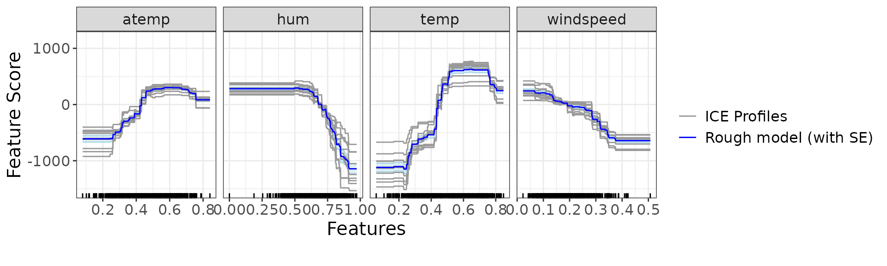
ip$discrete + ggplot2::theme(text = ggplot2::element_text(size = 15))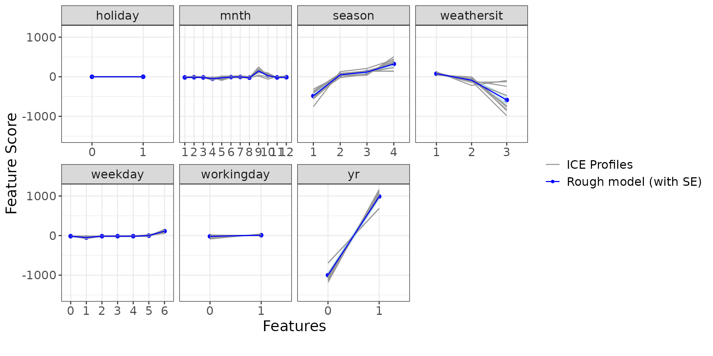
We would also like to see the direct variable importance, a quantity that we have defined in model sculpting. It can be interpreted as feature importance based on the provided model
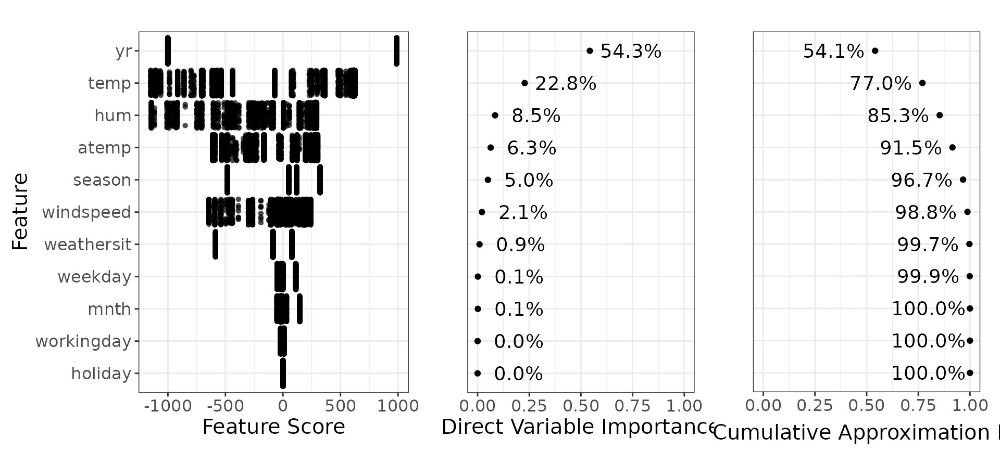
You can compare this with the variable importances generated by the xgboost.
Build a detailed model
The next step in model sculpting is to smooth the individual PDP curves. This ensures more clear interpretation of the sculpted results. This model we call a detailed model.
You can freely choose which smoothers you would like to use, but you
need to write your own function for that. So far, we have prepared two
versions: linear models (using lm) and generalized additive
models (using mgcv::gam with smoothness).
Detailed model using lm smoother
Let’s start with a linear smoother We create a detailed model using
lm smoother based on the rough model above:
detailed_sculpture_lm <- sculpt_detailed_lm(rough_sculpture)Let’s have a look at the results.
dsp_lm <- g_component(detailed_sculpture_lm)
dsp_lm$continuous + ggplot2::theme(text = ggplot2::element_text(size = 15))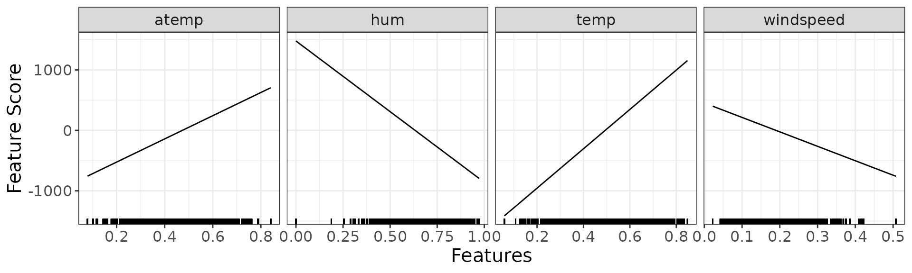
dsp_lm$discrete + ggplot2::theme(text = ggplot2::element_text(size = 15))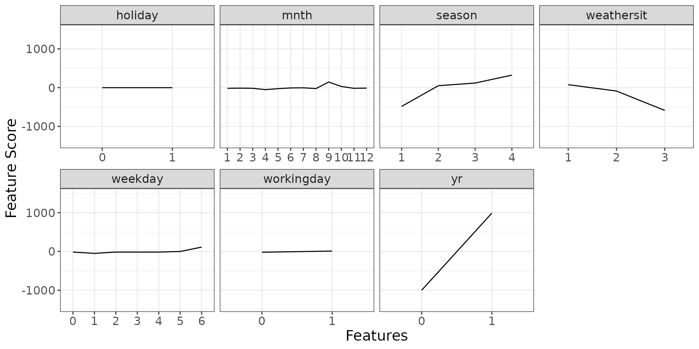
We also show the direct variable importance for this detailed sculpture with lm smoother. Remember to use the product marginals when analysing direct variable importance.
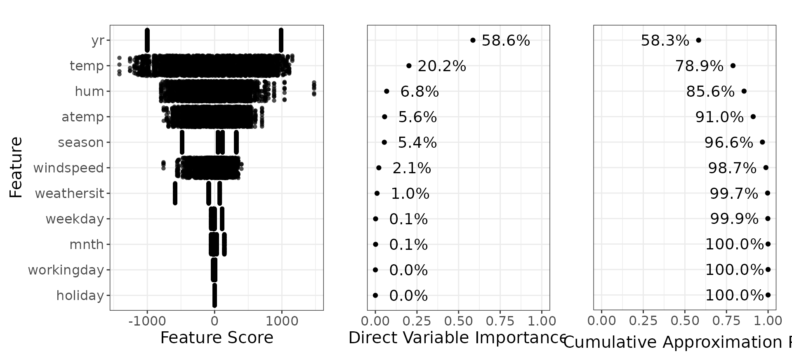
Detailed model using gam smoother
We are going to do the same as above just with a different smoother -
using mgcv::gam with smoothness mgcv::s.
detailed_sculpture_gam <- sculpt_detailed_gam(rough_sculpture)
#> Loading required namespace: mgcvLet’s have a look at the results.
dsp_gam <- g_component(detailed_sculpture_gam)
dsp_gam$continuous + ggplot2::theme(text = ggplot2::element_text(size = 15))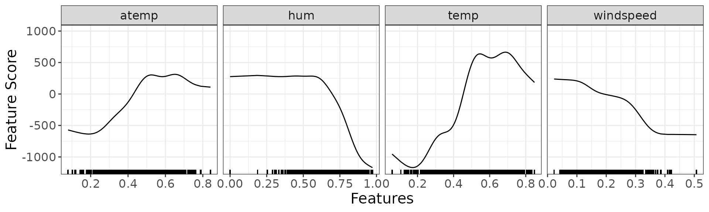
dsp_gam$discrete + ggplot2::theme(text = ggplot2::element_text(size = 15))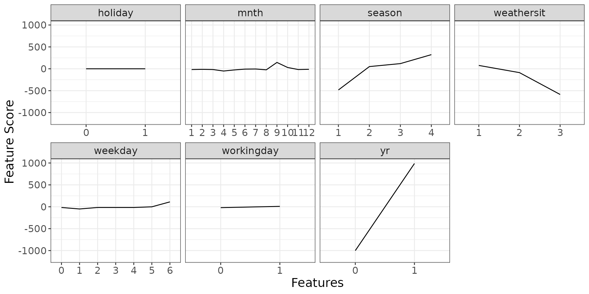
We again show the direct variable importance for this detailed sculpture with gam smoother.
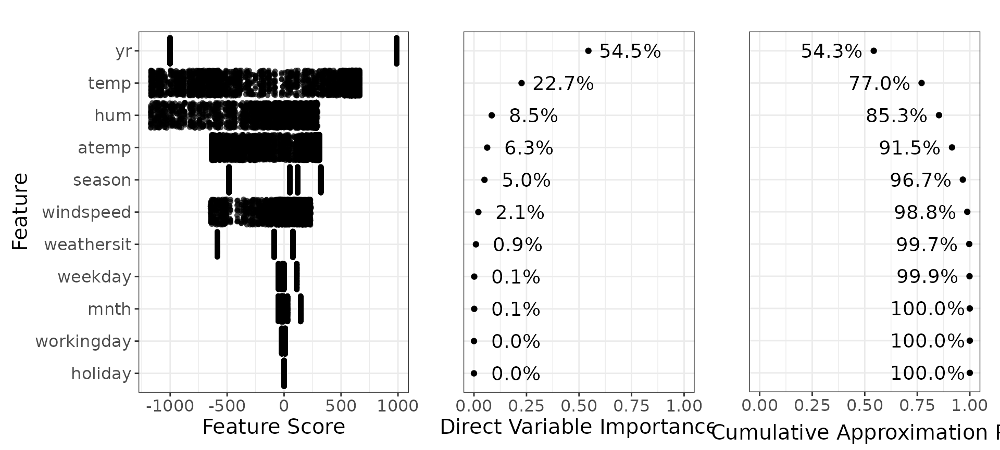
Detailed model using arbitrary smoother
You can also define your own arbitrary smoother and build a detailed model on your own.
For that you can use function sculpt_detailed_generic,
which works similarly as sculpt_detailed_lm or
sculpt_detailed_gam, you just need to provide the
definitions of your smoother (parameter smoother_fun) and
smoother prediction function (parameter
smoother_predict_fun). See the documentation for more
info.
Build a polished model
Once we have all the variable importances, we can reduce the model to
only a few terms while keeping the highest performance possible. For
example, if we decide to go with the detailed model using gam smoothers,
and if we aim for at least 95% performance of the original model, we see
in the graph above that we can take only yr,
temp, season, hum,
atemp, windspeed and weathersit
features.
polished_sculpture <- sculpt_polished(
detailed_sculpture_gam,
vars = c("yr", "temp", "season", "hum", "atemp", "windspeed", "weathersit")
)
length(polished_sculpture) # only 7 out of 11 variables included
#> [1] 7Compare results
Let’s compare the predictions of the original model vs sculpted models ( would mean exact match to the xgboost predictions).
g_additivity(
sp = list(
predict(rough_sculpture, pm),
predict(detailed_sculpture_lm, pm),
predict(detailed_sculpture_gam, pm),
predict(polished_sculpture, pm)
),
lp = xgb_pred(pm),
descriptions = c(
"Rough Model",
"Detailed model - lm",
"Detailed model - gam",
"Polished model"
),
cex = 4
) +
ggplot2::theme(text = ggplot2::element_text(size = 15))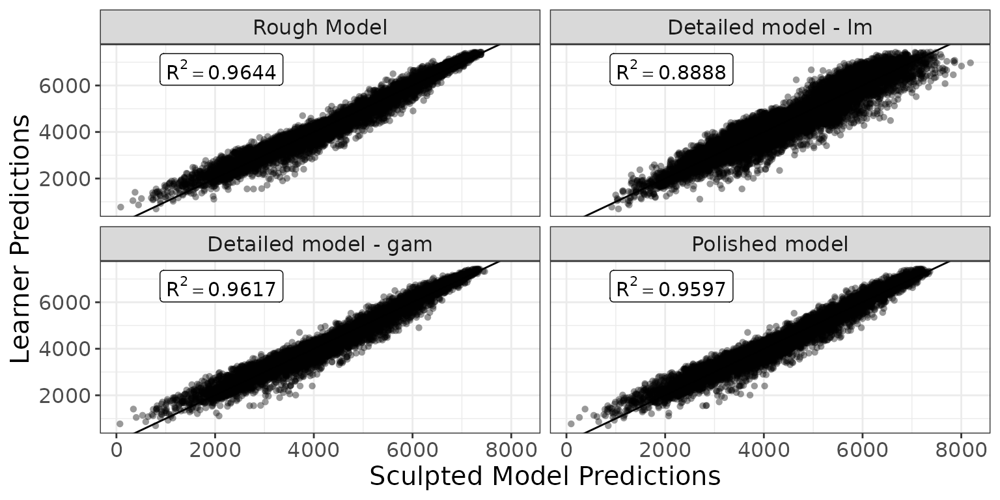
Here we can see the influence of each feature in each of the sculpted model.
scp <- g_comparison(
sculptures = list(rough_sculpture, detailed_sculpture_lm, detailed_sculpture_gam),
descriptions = c("Rough", "lm", "gam")
)
scp$continuous + ggplot2::theme(text = ggplot2::element_text(size = 15))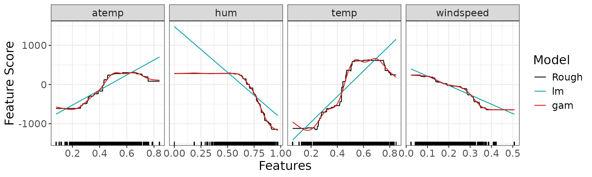
scp$discrete + ggplot2::theme(text = ggplot2::element_text(size = 15))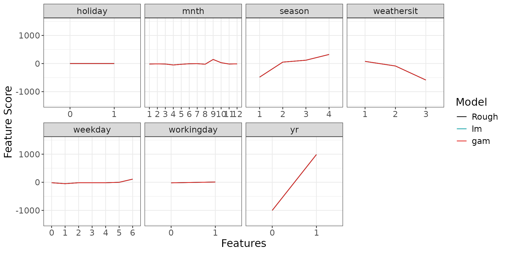
Conclusion
Here we compare the performance of the strong learner with the
sculpted models on both train and holdout sets. We will use
score_quadratic() and metrics_R2() from the
package, which is the traditional coefficient of determination
Train dataset
R2q <- function(y, y_hat) {
metrics_R2(score_fun = "score_quadratic", y = y, y_hat = y_hat)
}
metrics_train <- data.frame(
Model = c(
"Strong learner",
"Rough model",
"Detailed model - lm",
"Detailed model - gam",
"Polished model"
),
R2 = c(
R2q(df_t[[response]], xgb_pred(df_t[covariates])),
R2q(df_t[[response]], predict(rough_sculpture, newdata = df_t[covariates])),
R2q(df_t[[response]], predict(detailed_sculpture_lm, newdata = df_t[covariates])),
R2q(df_t[[response]], predict(detailed_sculpture_gam, newdata = df_t[covariates])),
R2q(df_t[[response]], predict(polished_sculpture, newdata = df_t[covariates]))
)
)
knitr::kable(metrics_train, align = "lcc")| Model | R2 |
|---|---|
| Strong learner | 0.9273318 |
| Rough model | 0.8726919 |
| Detailed model - lm | 0.7976886 |
| Detailed model - gam | 0.8644481 |
| Polished model | 0.8603234 |
Holdout dataset
metrics_test <- data.frame(
Model = c(
"Strong learner",
"Rough model",
"Detailed model - lm",
"Detailed model - gam",
"Polished model"
),
R2 = c(
R2q(df_h[[response]], xgb_pred(df_h[covariates])),
R2q(df_h[[response]], predict(rough_sculpture, newdata = df_h[covariates])),
R2q(df_h[[response]], predict(detailed_sculpture_lm, newdata = df_h[covariates])),
R2q(df_h[[response]], predict(detailed_sculpture_gam, newdata = df_h[covariates])),
R2q(df_h[[response]], predict(polished_sculpture, newdata = df_h[covariates]))
)
)
knitr::kable(metrics_test, align = "lcc")| Model | R2 |
|---|---|
| Strong learner | 0.8718544 |
| Rough model | 0.8523495 |
| Detailed model - lm | 0.7673903 |
| Detailed model - gam | 0.8570278 |
| Polished model | 0.8505340 |
Note that the only model with any interaction is the XGBoost (Strong learner), all the other models are purely additive (i.e. without interactions), which are much easier to interpret.
Based on the results above, it seems that removing the interaction lowers the performance only slightly. Depending on the use case, it may be better to use the less complex and more interpretable polished model than the original strong learner.
Density plot
The package also has functionality to visualize where the data were located when the model was trained.
density_plots <-
g_density_ice_plot_list(rough_sculpture, df_t,
c("yr", "temp", "season", "hum", "atemp", "windspeed", "weathersit"),
task = "regression"
)
grid::grid.draw(
gridExtra::arrangeGrob(
grobs = density_plots[c("yr", "temp", "season", "hum")]
)
)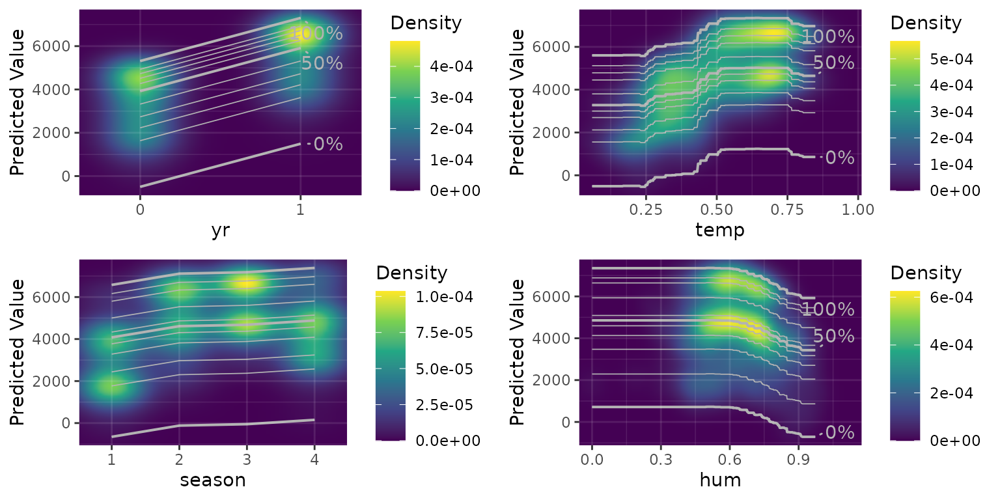